Flamenco
Grupos infantil, juvenil, medio, avanzado y profesional.
Clases de Flamenco, Danza Española y Sevillanas en Leganés. Trabajamos técnica, compás, expresión, braceo, zapateado y presencia escénica.
Clase de flamenco, sevillanas y danza española para diferentes edades y niveles.
Compás y técnica
Expresión y presencia
Sevillanas y flamenco
Niveles amateur a profesional
El flamenco y la danza española combinan técnica, musicalidad, carácter y expresión corporal. En Siete Notas se trabaja el compás, la coordinación, el braceo, el zapateado y la interpretación.
Tenemos grupos para diferentes edades y niveles: infantil, juvenil, medio, avanzado, profesional, sevillanas y danza española. Cada clase está pensada para avanzar con seguridad y disfrutar del proceso.
Grupos infantil, juvenil, medio, avanzado y profesional.
Iniciación y perfeccionamiento para aprender pasos y vueltas.
Formación en técnica, repertorio, musicalidad y presencia.
10:00 - 14:00
18:30 - 19:30
18:15 - 19:15
19:30 - 21:00
17:30 - 19:30
21:00 - 22:30
17:15 - 18:15
18:15 - 19:15
19:30 - 20:30
21:00 - 22:30
18:30 - 19:30
Aprende marcajes, brazos, pies y coordinación desde una base ordenada.
Trabajamos presencia, intención y seguridad en el movimiento.
Modalidad ideal para disfrutar, aprender estructura y ganar soltura.
Orientación según edad, experiencia y objetivos de aprendizaje.
En Siete Notas el flamenco se vive desde la técnica, el compás y la emoción. Trabajamos postura, brazos, pies, expresión y musicalidad para que cada alumno conecte con la tradición desde una metodología accesible.
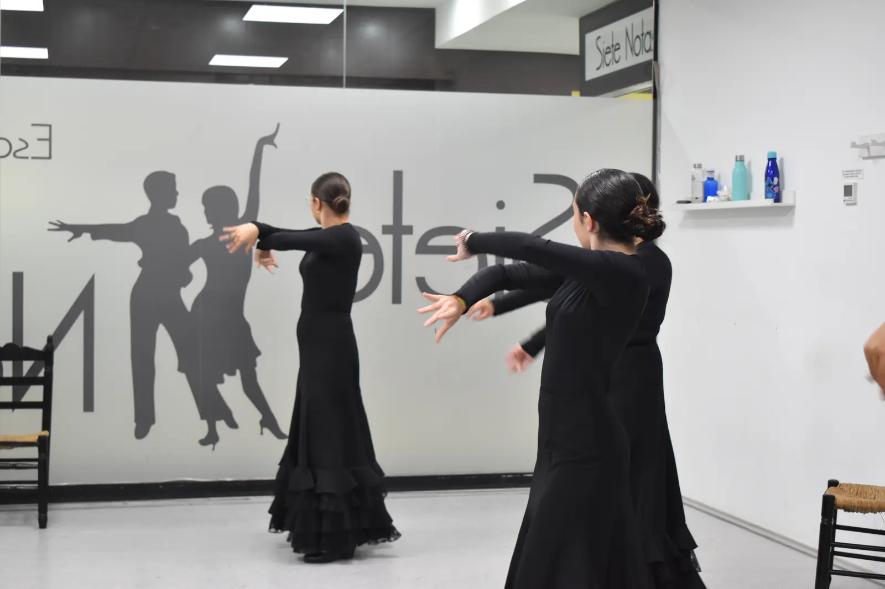

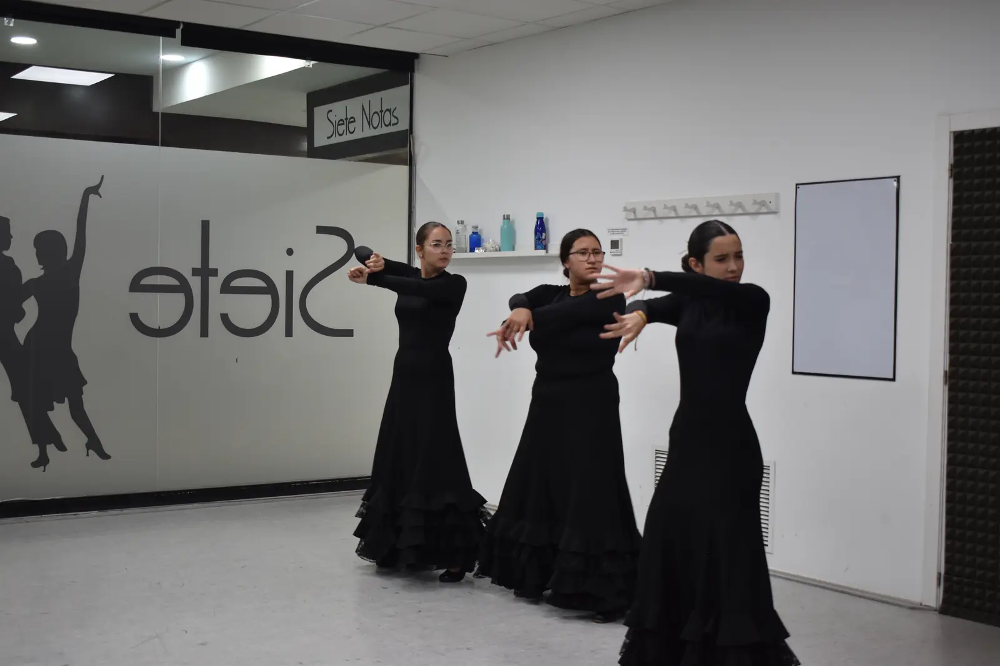
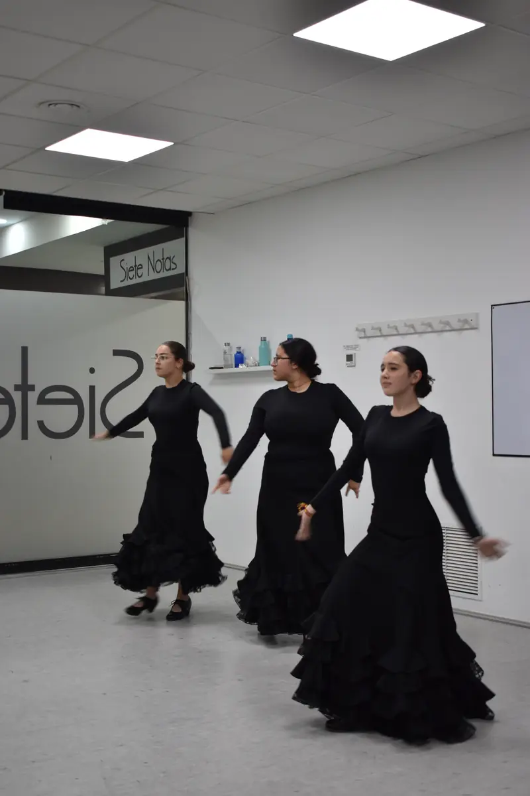
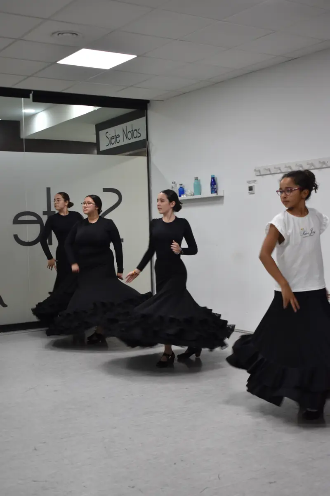
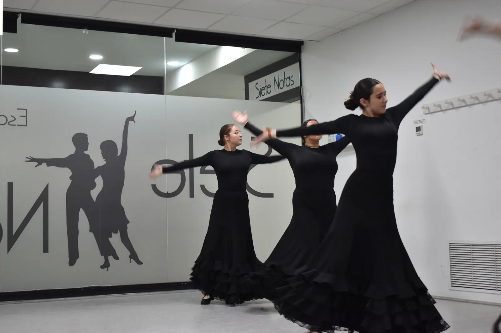
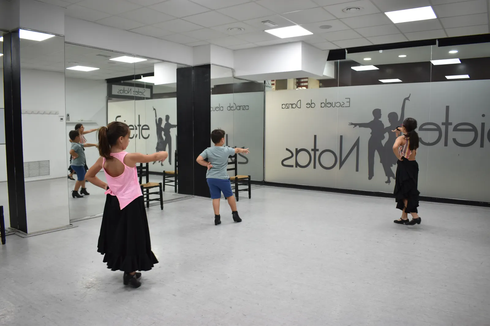
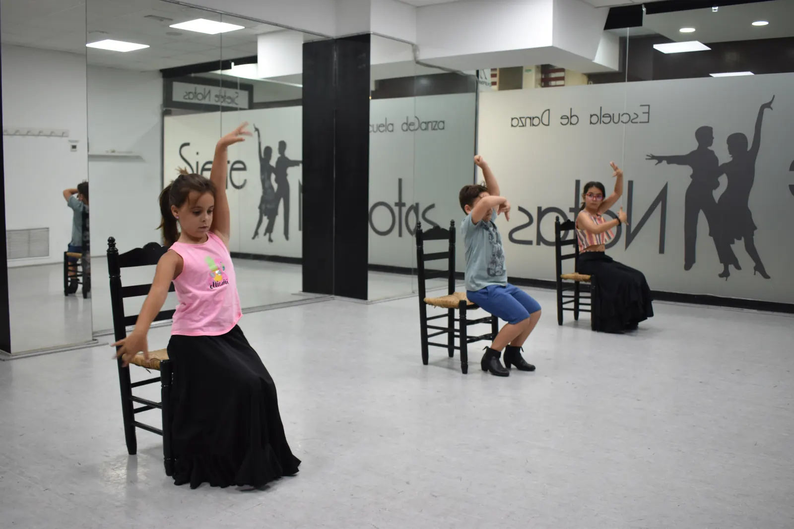


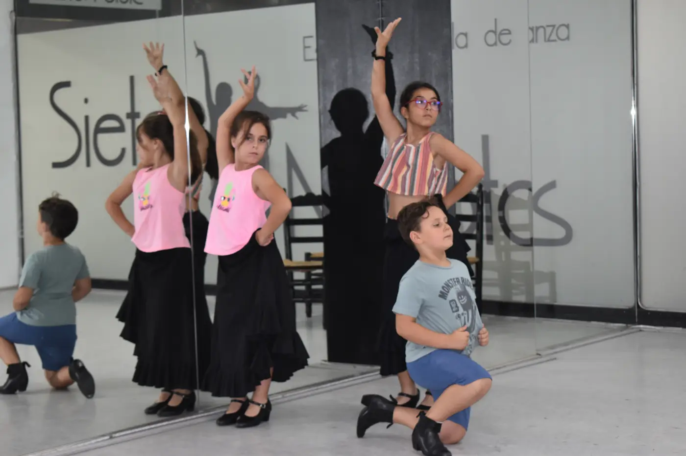
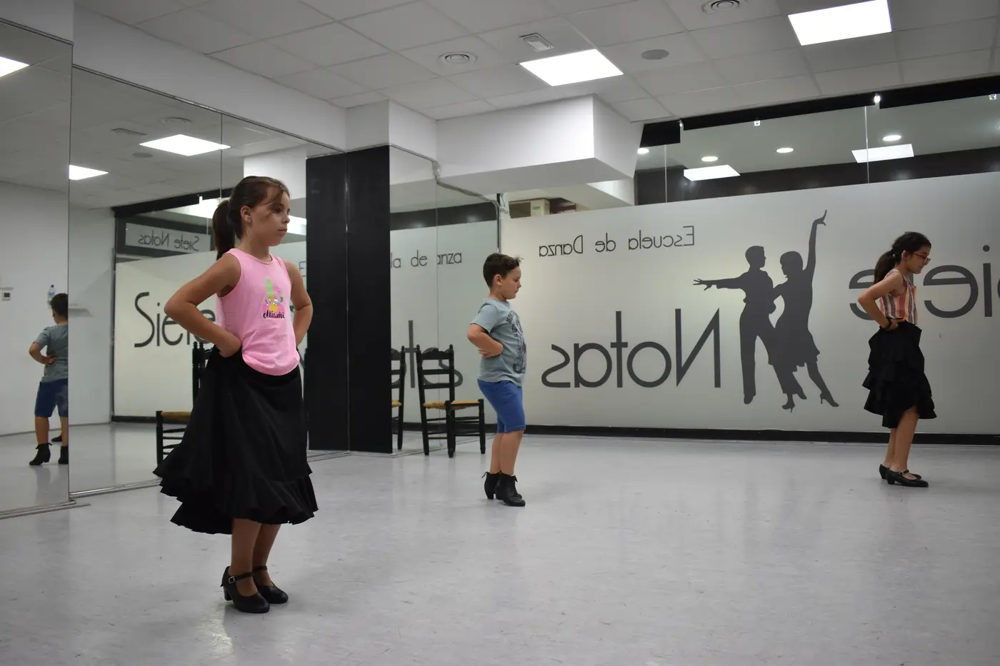
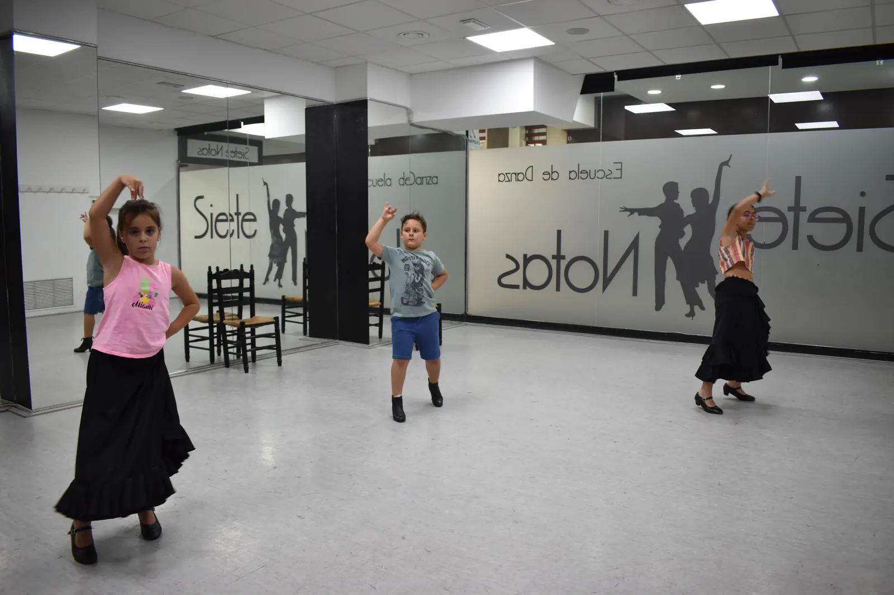
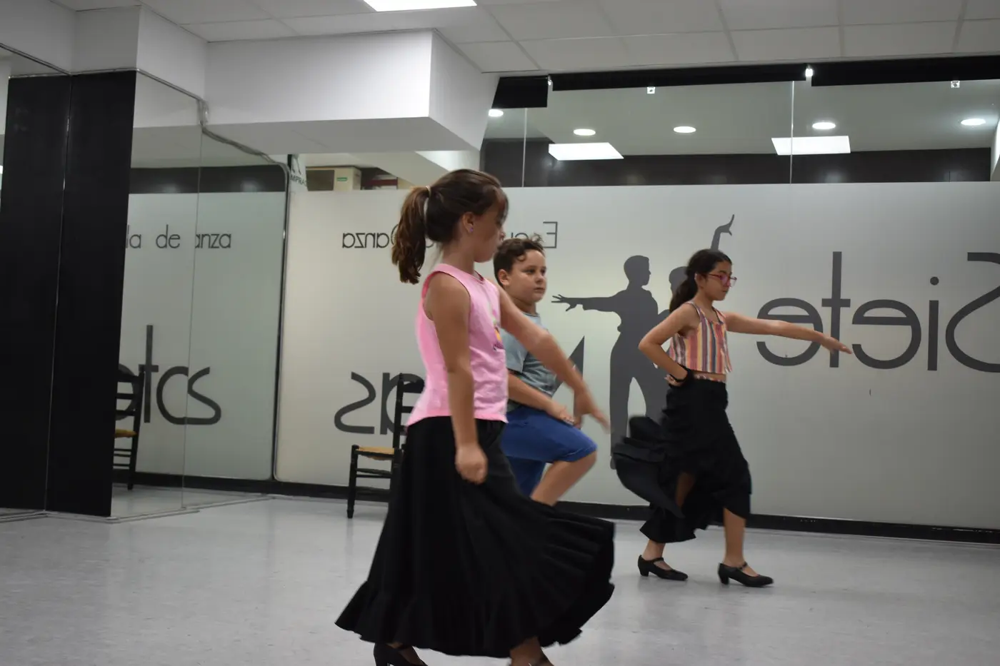
Las clases combinan explicación, práctica, corrección y acompañamiento. La idea es que cada persona se sienta cómoda, pueda preguntar y avance con una estructura clara.
Postura, brazos y colocación.
Trabajo musical para entender la estructura.
Pasos y combinaciones progresivas.
Expresión, fuerza y personalidad al bailar.
El flamenco y la danza española necesitan disciplina, pero también un espacio donde aprender sin miedo. La web ahora explica mejor qué se trabaja y qué puede esperar una persona al apuntarse.
Si buscas flamenco en Leganés, danza española en Leganés, sevillanas en Leganés, clases de flamenco para niños y adultos. en Leganés, en Siete Notas te orientamos según edad, nivel, objetivos y disponibilidad.
Solicitar informaciónTe orientamos según edad, experiencia previa, disponibilidad horaria y objetivo personal.
Sí. Muchas actividades cuentan con niveles de iniciación y grupos adaptados.
Sí. Te orientamos hacia un grupo adaptado para aprender desde la base.
Sí. La página incluye sevillanas y modalidades relacionadas con danza española.
La disponibilidad puede variar, pero se trabaja con distintos perfiles y niveles.